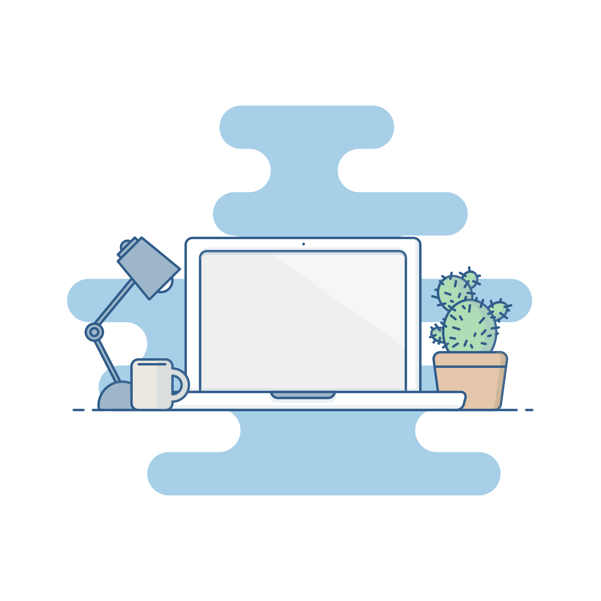

02 / Outside of class
More than
the screen.
- Playing basketball
- Listening to music
- Exploring new places
About Lucas / A closer look
I’m Lucas Chen — a student, builder, and lifelong learner who enjoys turning curiosity into something people can use.

01 / My approach
I’m drawn to projects where there is room to ask better questions and make a meaningful improvement.
I like learning by doing: understanding the problem, trying an idea, listening to feedback, and refining the result. Whether I’m working on a class assignment or a personal project, I care about making the final experience feel thoughtful and easy to understand.
I’m currently exploring software engineering, product design, and the many ways technology can help people move from “what if?” to “here it is.”
02 / Outside of class
03 / What’s next
I’m interested in internships, collaborations, and teams where I can contribute, keep learning, and build work that matters.
Let’s connect